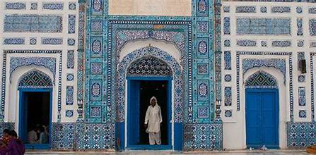
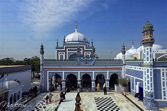

Tomb of Shah Abdul Latif Bhittai
The mausoleum of Sindh’s greatest Sufi poet, located in Bhit Shah, Sindh, Pakistan.
The mausoleum of Sindh’s greatest Sufi poet, located in Bhit Shah, Sindh, Pakistan.
The Tomb of Shah Abdul Latif Bhittai is the final resting place of the revered Sufi saint, scholar, and poet Shah Abdul Latif Bhittai (1689–1752). It is located in Bhit Shah, Matiari District, Sindh, Pakistan. Shah Latif is considered the greatest poet of the Sindhi language and one of the most prominent Sufi figures in South Asia.
The mausoleum was built in the mid-18th century and remains a major center of spiritual devotion, attracting thousands of devotees, scholars, and visitors every year. His poetry, compiled in the Shah Jo Risalo, emphasizes love, tolerance, and humanity.
The mausoleum of Shah Abdul Latif Bhittai is a masterpiece of Sindhi architecture. It features a grand dome, intricate blue and white tile work, and traditional Sindhi decorative patterns. The interior walls are adorned with Quranic inscriptions and poetic verses.
Surrounding the tomb is a courtyard where qawwali and devotional music are performed, reflecting Shah Latif’s love for music and spirituality. The shrine continues to be a vibrant place for cultural and spiritual gatherings.
